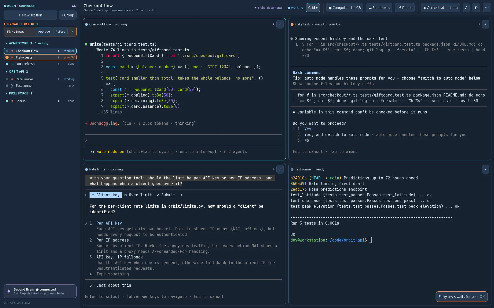
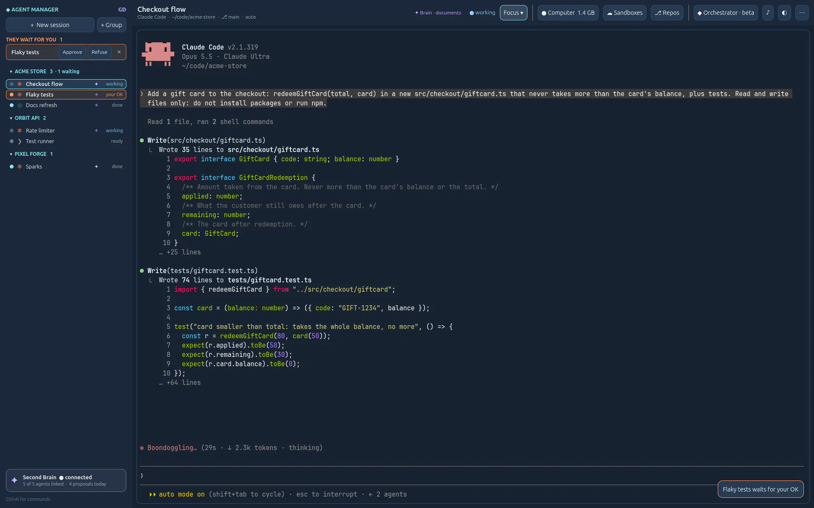

Small AI‑native apps. Each stands alone. Together, they share one brain.
Desktop apps drawn by a game engine, each one complete on its own: its own window, its own data. Plug them into the Second Brain and what one learns, the others know. Two are used every day; more are in the lab.
Each app stands on its own.Plugged in, they share one memory.

On its ownSpeak, drop or send: the Archivist files it in your graph, on your own computer.
Plugged inEvery agent you plug in reads it and proposes to it; you approve. Any MCP client can plug in, not only ours.
Visit →
On its ownYour agent lab: Claude Code, Codex and your shells side by side, isolated, observed, in your control.
Plugged inEach session gets its own Brain key: it starts from what you know and proposes what it learns.
Visit →On its ownDrop a scope of any shape: deliverables, tasks and risks. See who is overloaded which week, in its own data.
Plugged in · plannedFollow-ups written from what the Brain already knows about the project and the people.
On its ownA CRM you talk to: « he wants a quote by Friday » becomes a note, a follow-up and an up-to-date client.
Plugged in · plannedAsk what you know about a client, and the answer draws on everything in your Brain.
On its ownA starter for your own app: the lab's recipe and a skeleton that runs.
Plugged in · plannedOne command opens both apps, connected. Pour out your idea; your own agents start building it.
Every app works without the others. Switch to Together to plug them in. connected today over MCP planned
The dashed windows are open-source prototypes, not finished products: your choice of AI model, sample data in every demo. Their status changes here the day it changes.
Together, up close
What one agent learns, the next one knows.
Switch to Together and this is what happens: every Claude Code or Codex session in Agent Manager is plugged into your Second Brain over MCP.
- A key per session. Each agent gets its own Brain key when it starts. Remove the session and the key is revoked.
- It starts from what you know. The agent searches the Brain: the project card, the last journal, your decisions. A session can be told to orient there first and document itself as it works.
- You keep the last word. What it learns comes back as proposals. The archivist files what you approve, and the timeline can undo it.


Built with
- Godot 4.7
- GDScript
- Python
- SQLite
- C++ · libghostty-vt
- MCP
- Claude Code · Codex
The same recipe in every app: a Godot interface, a local Python engine beside it, AI agents, and the Second Brain as shared memory.
Open source
MIT licence, each app with its devlog. github.com/sonixz
Latest from the blog
The lab opens · 9 November 2026